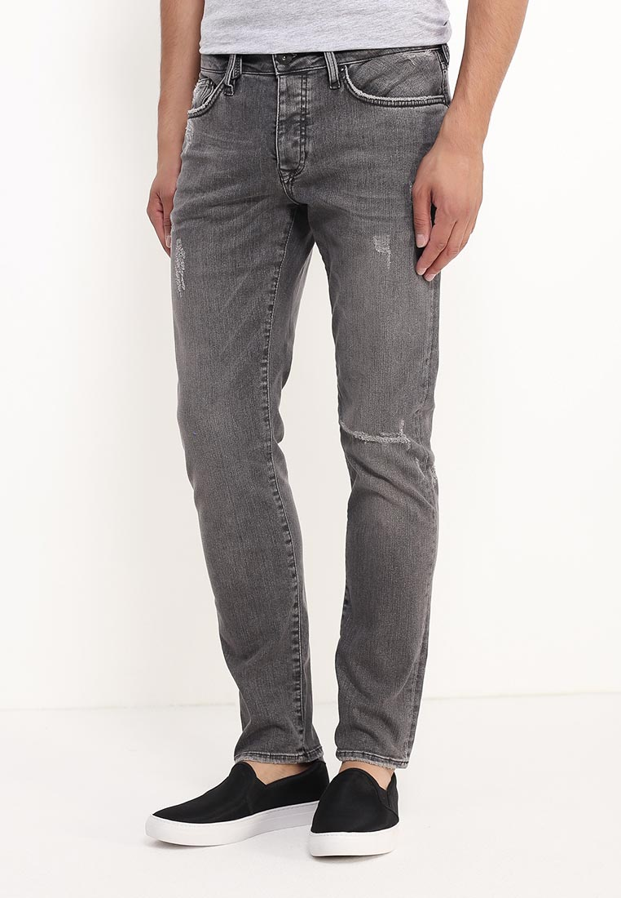
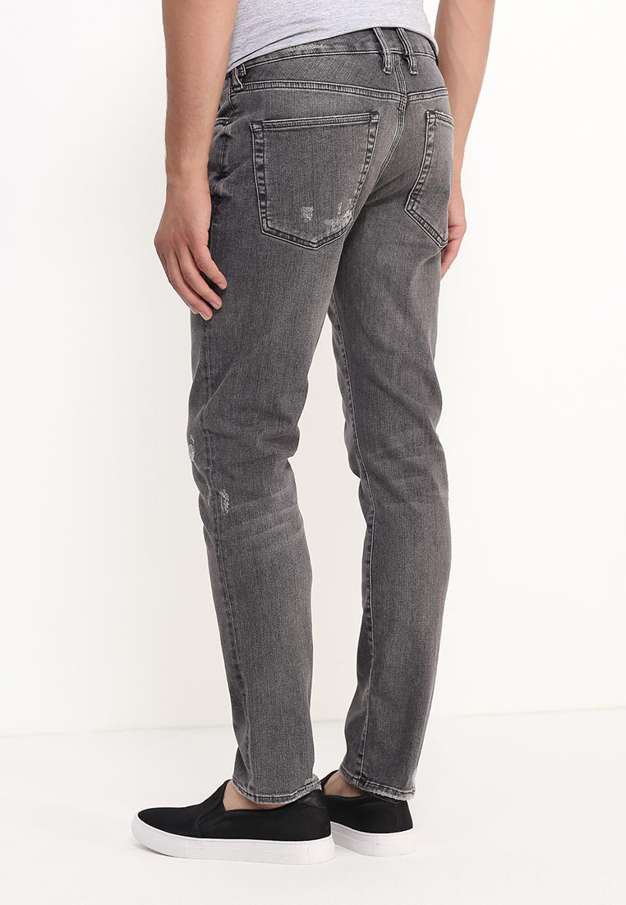
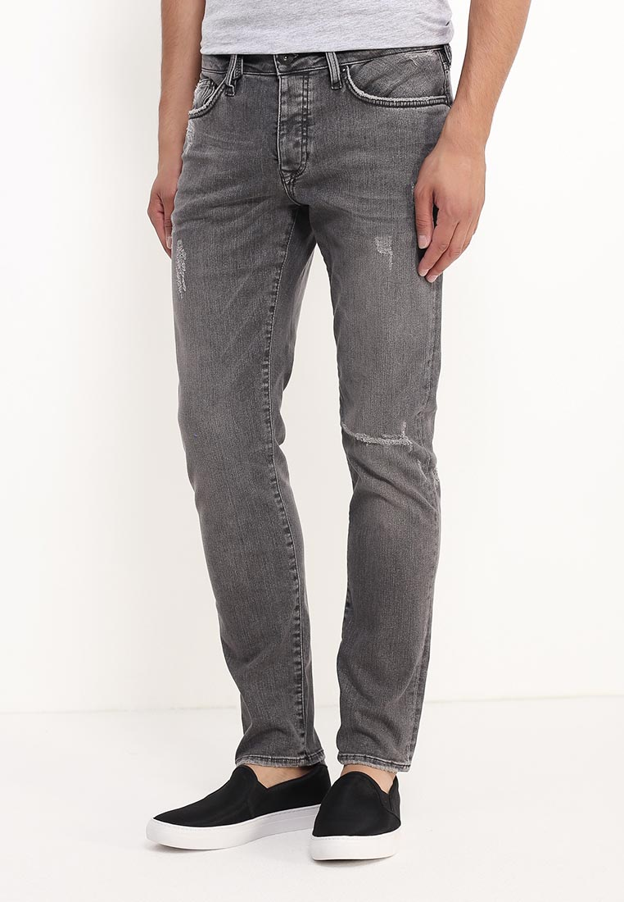
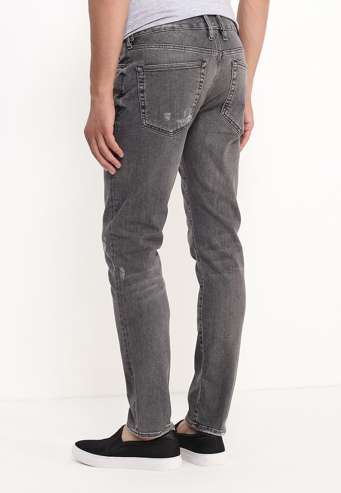

Джинсы River Island выполнены из стрейчевого денима с эффектом состаренности. Модель зауженного к низу кроя. Детали: застежка на молнию и пуговицу, три кармана спереди и два накладных кармана сзади, шлевки для ремня.
Состав Хлопок - 91%, Полиэстер - 5%, Эластан - 4%
Длина по боковому шву 102 см
Длина по внутреннему шву 76 см
Высота 25 см
Обхват по бедрам 104 см
Ширина по низу 17 см
Обхват по талии 81 см
Размер модели на фото 32/32
Рост модели на фото 187
Параметры модели 98-80-99
Посадка Slim Fit
Застежка на молнии
Цвет серый
Страна производства Турция
Сезон Мульти
Стиль Повседневный
Коллекция Осень-зима
Детали одежды винтаж
Узор Однотонный
Тип размера Стандартный
Потертость Сильно потертые
Тип джинс/брюк зауженные
Карманы 5
Артикул RI004EMKAX38
Более детально с данными джинсами Вы можете ознакомиттся на этих фото:
 



Все права защищены ©